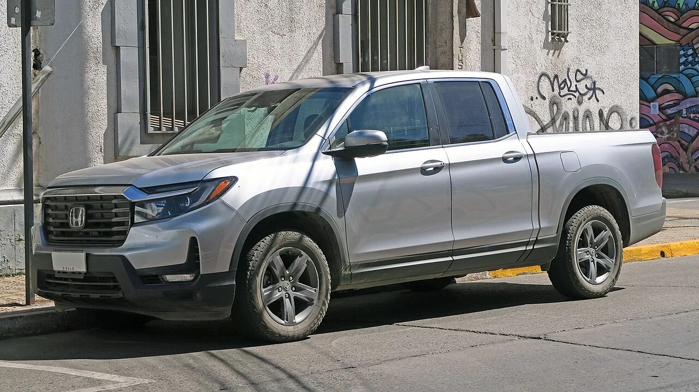
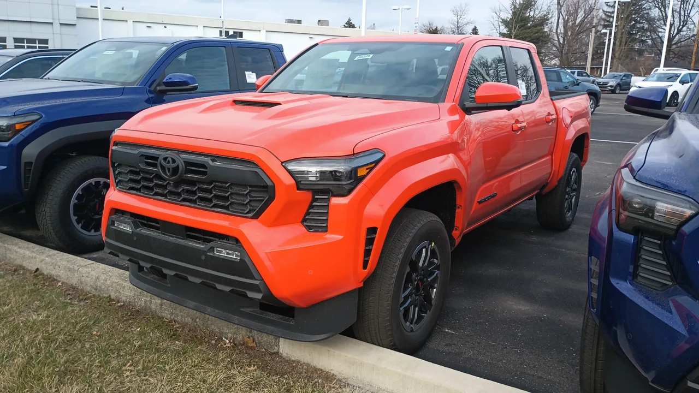
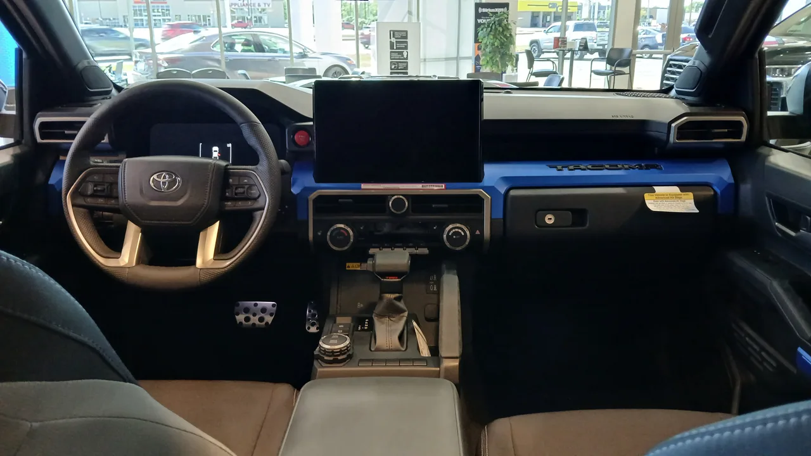
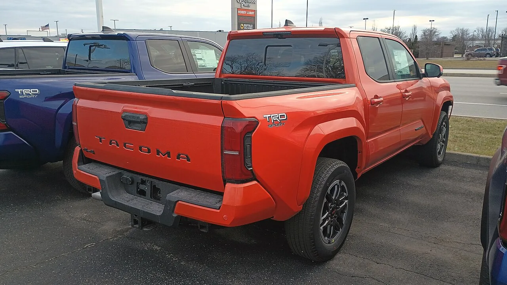

▲ 혼다 리지라인 HPD. 유니바디 구조로 크로스오버에 가까운 승차감을 갖춘 중형 픽업트럭이다 ⓒ Elise240SX, Wikimedia Commons (CC BY-SA 4.0)
미국 자동차 매체 카버즈(CarBuzz)에 따르면 일상 운전 품질과 신뢰성을 중시하는 구매자에게는 혼다 리지라인이 토요타 타코마보다 더 나은 선택이 될 수 있다. 유니바디 구조를 채택한 리지라인은 크로스오버에 가까운 편안한 승차감을 제공하며, 최근 타코마가 겪은 리콜 이슈와 V6 엔진 단종이 이런 평가에 힘을 싣고 있다.
| 항목 | 혼다 리지라인 | 토요타 타코마 |
|---|---|---|
| 차체 구조 | 유니바디 | 프레임(바디온프레임) |
| 가격(비교 트림) | $40,795(스포츠 AWD) | $32,445(SR) |
| 엔진·출력 | 3.5L V6, 280마력 | 2.4L 터보 4기통, 228마력 |
| 최대 견인력 | 5,000lbs | - |
| 연간 유지비 | 약 $5,391 | 약 $5,369 |
1. 유니바디의 힘 — 트럭인데 세단처럼 편안하다

▲ 리지라인 측면. 프레임바디가 아닌 유니바디 구조를 택해 승용차에 가까운 접지감을 낸다 ⓒ RL GNZLZ, Wikimedia Commons (CC BY-SA 2.0)
리지라인은 혼다 파일럿과 플랫폼을 공유하는 유니바디 구조를 택했다. 대부분의 중형 픽업트럭이 여전히 채택하는 프레임바디 방식과 달리, 유니바디는 차체와 프레임이 하나로 결합돼 있어 노면 충격을 흡수하는 능력과 정숙성에서 유리하다. 카버즈는 이 구조 덕분에 리지라인이 오프로드 극한 상황보다 포장도로 위주의 일상 운전에서 훨씬 편안한 승차감을 낸다고 평가했다. 3.5L V6 엔진은 280마력을 내며 최대 5,000lbs 견인력을 확보해, 크로스오버 감성에도 불구하고 실용성은 놓치지 않았다.
2. 타코마의 흔들리는 신뢰도 — 리콜과 V6 단종

▲ 토요타 타코마 TRD 스포츠. 정통 프레임바디 구조의 강자지만 최근 리콜 이슈를 겪었다 ⓒ Deathpallie325, Wikimedia Commons (CC BY-SA 4.0)
타코마는 오랫동안 중형 픽업트럭 시장의 기준점 역할을 해온 모델이지만, 최근 몇 년간 품질 이슈로 곤욕을 치렀다. 신형 타코마는 자연흡기 V6 엔진을 단종하고 2.4L 터보 4기통 중심으로 라인업을 재편했는데, 이 과정에서 일부 트림의 리콜 문제가 불거지며 초기 구매자들의 신뢰도에 타격을 줬다는 것이 매체의 평가다. 실내공간에서도 어깨너비·다리공간 모두 리지라인에 뒤처지는 것으로 나타나, 프레임바디 특유의 강인함 외에는 뚜렷한 우위를 찾기 어렵다는 지적이 나온다.
3. 왜 지금이 리지라인을 살 타이밍인가

▲ 타코마 실내. 리지라인 대비 어깨너비·다리공간에서 다소 좁다는 평가를 받는다 ⓒ Deathpallie325, Wikimedia Commons (CC BY-SA 4.0)
혼다는 배출가스·연비 규제 대응을 이유로 2026년 4분기부터 리지라인 생산을 약 18개월간 중단할 예정이다. 생산은 2028년 3분기 무렵 개선된 V6 엔진을 얹은 3세대 완전변경 모델로 재개될 전망이다. 혼다 측은 리지라인이 여전히 라인업에서 중요한 모델이라고 밝혔지만, 공백기 동안 신차 재고가 소진되면 당분간 신차 구매 자체가 어려워질 가능성이 크다. 카버즈는 이 때문에 향후 가격 인상이나 물량 부족을 감안하면 지금이 리지라인 신차를 구매하기에 유리한 시점이라고 짚었다.
4. 정리 — 오프로드냐 일상 편안함이냐

▲ 타코마 후면. 프레임바디 구조 특유의 강인한 오프로드 성능은 여전히 강점이다 ⓒ Deathpallie325, Wikimedia Commons (CC BY-SA 4.0)
험로 주행과 개조 여지, 브랜드 헤리티지를 우선한다면 타코마가 여전히 정통파 픽업트럭의 정석이다. 반면 매일 출퇴근과 가족 이동에 픽업트럭의 적재 실용성을 더하고 싶은 구매자라면, 승차감과 정숙성에서 앞서는 리지라인이 더 합리적인 선택일 수 있다. 다만 리지라인은 18개월 생산 공백을 앞두고 있어, 관심이 있다면 재고 소진 전 구매를 서두르는 편이 안전하다.